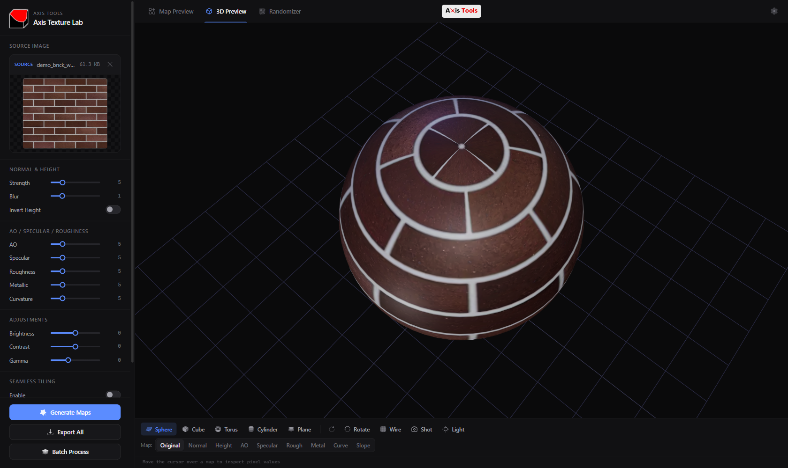
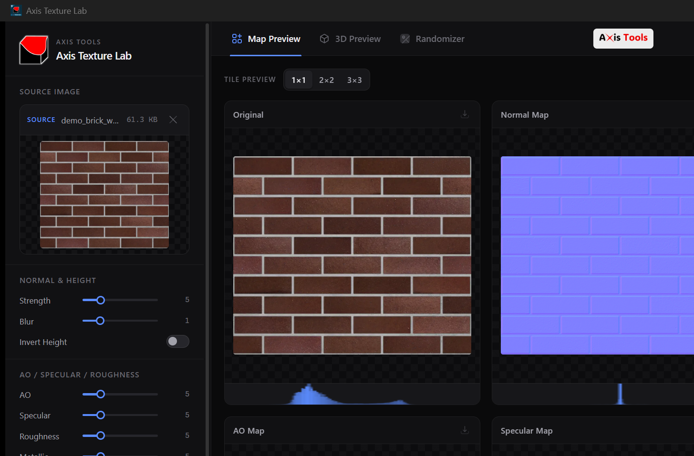

Turn any 2D image into complete, production-ready PBR material packages with instant real-time Three.js physical rendering and infinite procedural terrain synthesis. Engineered in Rust for blazingly fast native performance under 10 MB.

A clean, dark-mode workspace packed with professional PBR baking, 3D orbiting, and procedural terrain generation.

No subscriptions. No bloated runtimes. Just instant native tooling for game-ready materials.
Extract Normal, Height, Ambient Occlusion, Specular, Roughness, Metallic, Curvature, and Slope maps simultaneously from any image.
Inspect materials instantly on Cube, Sphere, Plane, Cylinder, and Torus meshes with Three.js physical PBR shaders and wireframe mode.
Generate infinite seed-based procedural landscapes with octave and persistence control. Use the 1-click bridge to bake terrain materials.
Switch between Studio, Dramatic, and Outdoor presets or fine-tune Key, Fill, Ambient, and Rim lights in real-time with the lighting popover.
Toggle normal map green channel inversion with a single click. Seamless compatibility for Unreal Engine, Unity, Godot, and Blender.
Detect edge discrepancies automatically and inspect tileability across 1×1, 2×2, 3×3, and 4×4 repetitions before exporting to your game engine.
Experience native Rust performance vs traditional legacy toolkits and heavy web wrappers.
| Feature | Axis Texture Lab (v2.0) | Electron-based Apps | Legacy Tools (CrazyBump / Materialize) |
|---|---|---|---|
| Binary Size | ~9.2 MB | 150 MB – 300 MB | 50 MB – 120 MB |
| Startup Time | Instantaneous (< 0.3s) | 2.5s – 5.0s | 1.5s – 3.0s |
| Memory Footprint | ~45 MB Idle | 250 MB – 600 MB | 150 MB – 300 MB |
| Native OS Dialogs | Yes (Rust RFD) | Chrome dialogs | Win32 / Custom |
| Procedural Terrain | Live 3D Synthesizer | No | No |
| 16-bit HDR Export | Yes | Limited | Partial |
| Cost & Licensing | 100% Free & Open Source (MIT) | Varies | Paid / Abandoned |
Select your operating system. Built natively for maximum performance and low memory footprint.
Zero installation required. Single `.exe` with all assets embedded. Run from USB or any folder.
Download Portable EXEUnpacked portable distribution including the executable, high-resolution icons, and quick-start guide.
Download Portable ZIPStandard Windows installer with Start Menu shortcuts, Desktop icon, and a clean uninstaller.
Download Setup InstallerWindows Installer (.msi) package designed for corporate deployment, Intune, and silent installs.
Download MSI PackageWindows Requirements: 64-bit Windows 10 (version 1809+) or Windows 11 with Microsoft Edge WebView2 (preinstalled on modern Windows PCs).
Universal macOS disk image for both Apple Silicon (M1/M2/M3/M4) and Intel Macs. Simply drag and drop into Applications.
Download Universal DMGCompressed `.app` bundle archive. Extract and run directly without mounting a virtual disk.
Download App Tarball (.tar.gz)macOS Requirements: macOS 11.0 (Big Sur) or newer. Universal binary natively optimized for Apple Silicon (ARM64) and Intel (x86_64).
Zero installation required. Runs directly on Ubuntu, Debian, Fedora, Arch Linux, Manjaro, openSUSE, and more.
Download AppImageNative package installer for Ubuntu, Debian, Linux Mint, and Pop!_OS. Integrates with system application menu.
Download .deb PackageStandalone binary archive. Unpack and run or integrate into custom game-dev pipelines.
Download Tarball (.tar.gz)Linux Requirements: Modern 64-bit Linux distribution (Ubuntu 20.04+, Fedora 36+, Debian 11+, Arch) with WebKit2GTK 4.1.